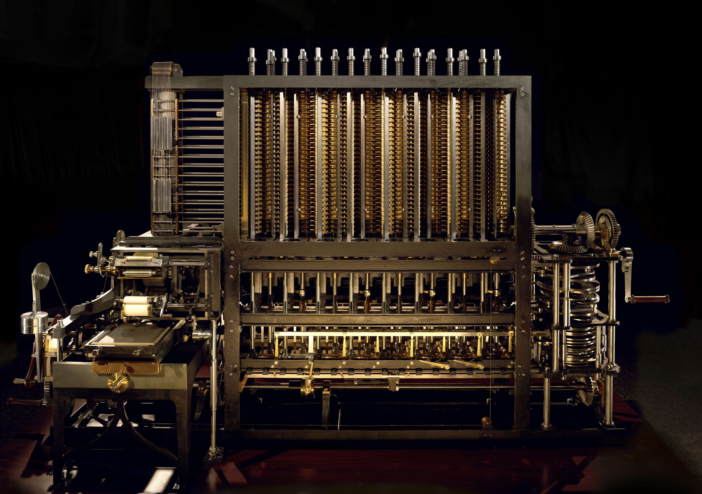

Ada Lovelace is bekend geworden door haar beschrijving over de analytische machine van Charles Babbage. Dit was de voorganger van de computer. Ze had de ideeën van hem uitgebreid zodat de machine bijvoorbeeld ook muziek kon afspelen en afbeeldingen kon maken.
